ggOceanMaps User Manual
Mikko Vihtakari (Institute of Marine Research)
16 September, 2022
Source:vignettes/ggOceanMaps.Rmd
ggOceanMaps.RmdThe ggOceanMaps package for R allows plotting data on bathymetric maps using ggplot2. The package is designed for ocean sciences and greatly simplifies bathymetric map plotting anywhere around the globe. ggOceanMaps uses openly available geographic data. Citing the particular data sources is advised by the CC-BY licenses whenever maps from the package are published (see the Citations and data sources section). Note that the package comes with absolutely no warranty and that maps generated by the package are meant for plotting scientific data only. The maps are coarse generalizations of third party data and therefore inaccurate.
Basic use
ggOceanMaps extends on ggplot2.
Data that contain geographic information can be plotted on the maps
generated by ggOceanMaps using the ggplot2 layers separated by the
+ operator. The package uses spatial shapefiles, GIS packages for R to
manipulate, and the ggspatial
package to help to plot these shapefiles. The shapefile plotting is
conducted internally in the basemap function and uses ggplot’s sf
object plotting capabilities.
The primary aim of ggOceanMaps is to make plotting oceanographic spatial data as simple as feasible, but also flexible for custom modifications. The “as simple as feasible” part will be covered in this section, while the “flexible for custom modifications” part is covered in the Advanced use section. The basic use section of this tutorial assumes that the user knows how to use ggplot. If you are not familiar with this package, you may read the Data visualization section in Hadley Wickham & Garrett Grolemund. This tutorial does not describe functions in ggOceanMaps but rather focusses on how to use them. Make sure to refer to the function documentation while reading the tutorial.
The package requires the ggOceanMapsData package which
is not available on CRAN but should be installed automatically when you
load ggOceanMaps for the first time. If the automatic
installation does not work, please use:
install.packages("ggOceanMapsData", repos = c("https://mikkovihtakari.github.io/drat", "https://cloud.r-project.org"))Once the packages have been installed, you can load them normally:
Limits
To ensure simplicity, ggOceanMaps package attempts to use decimal degree
coordinate
system as much as possible. This system represents coordinates on a
sphere, while maps are plotted in two dimensions. Therefore, the
underlying map data have to be projected using different mathematical algorithms depending on the
geographic location. The simplest way of defining the geographic
location is to use the limits argument with decimal
degrees. The limits argument can be defined either as a numeric vector
of length 1 or 4. Specifying the argument as a single integer between 30
and 88 or -88 and -30 plots a polar stereographic map for the Arctic or
Antarctic, respectively.
library(ggOceanMaps)
basemap(limits = 60) # A synonym: basemap(60) Rectangular maps are plotted by specifying the limits
argument as a numeric vector of length 4 where the first element defines
the start longitude, the second element the end longitude, the third
element the minimum latitude and the fourth element the maximum latitude
of the bounding box:
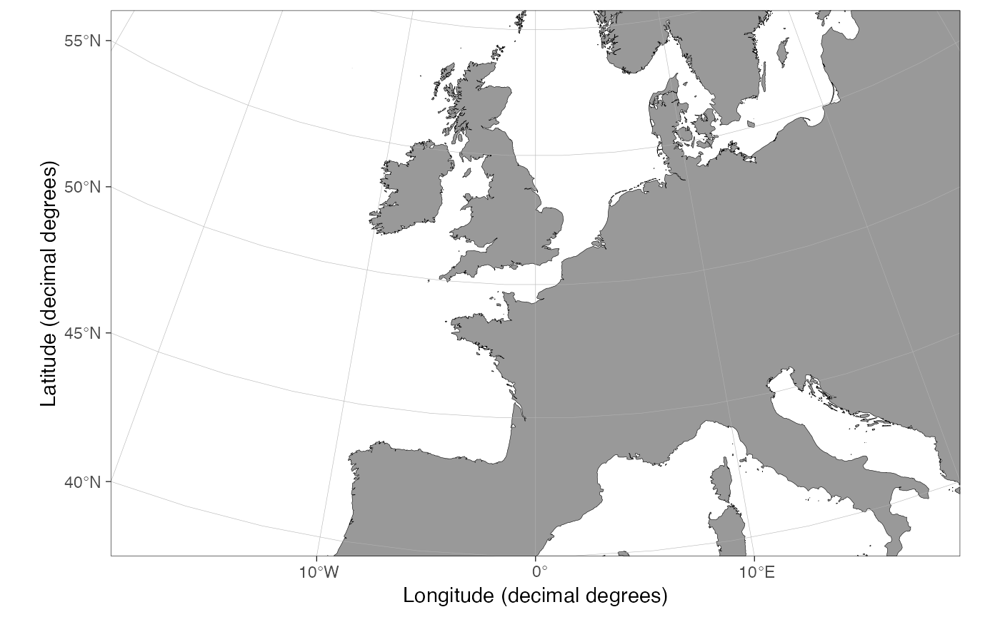
Limiting maps using decimal degrees is somewhat counter-intuitive
because maps plotted for polar regions (>= 60 or <= -60 latitude)
are actually projected to Arctic and Antarctic polar stereographic
systems. Because decimal degrees are angular units running
counter-clockwise, also the longitude limits have to be defined
counter-clockwise. Projected maps with decimal degree
limits will lead to expanded limits towards the poles when
using Arctic and Atlantic Polar Stereographic projections because
decimal degrees represent a sphere:
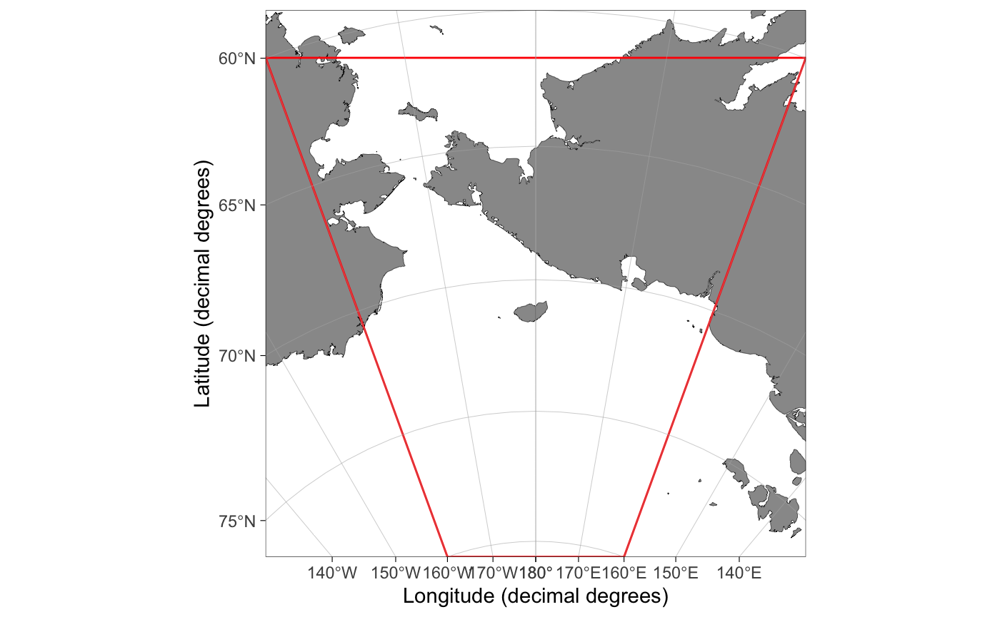
The figure above: Limiting rectangular basemaps is done by placing
four coordinates to the limit argument. A) If the limits are in decimal
degrees, the longitude limits ([1:2]) specify the start and
end segments of corresponding angular lines that should reside inside
the map area. The longitude limits are defined
counter-clockwise. The latitude limits
[3:4] define the parallels that should reside inside the
limited region given the longitude segments. Note that the resulting
limited region (polygon with thick red borders) becomes wider than the
polygon defined by the coordinates (thin red borders). The example
limits are c(120, -120, 60, 80). B) If the limits are given
as projected coordinates or as decimal degrees for maps with |latitude|
< 60, limits elements represent lines encompassing the map area in
cartesian space. The example limits are the limits from A) projected to
the Arctic stereographic (crs = 3995). When limiting basemaps using
data, the limits are calculated for the maximum reach of projected
coordinates as in B but with an added buffer to place all points inside
the map area.
As an example:
dt <- data.frame(lon = c(160, 160, -160, -160), lat = c(60, 80, 80, 60))
basemap(limits = c(160, -160, 60, 80)) +
geom_spatial_polygon(data = dt, aes(x = lon, y = lat), fill = NA, color = "red")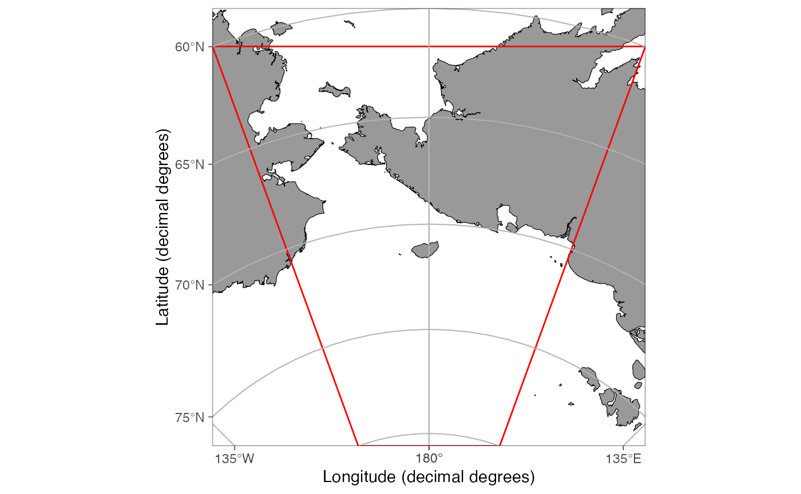
Exact control of map limits can be difficult using decimal degree
limits in polar regions. The limits argument also allows
specifying the limits in the underlying projected coordinate units.
First, we will need to find out how these units look like:
basemap(limits = 60, projection.grid = TRUE, grid.col = "red")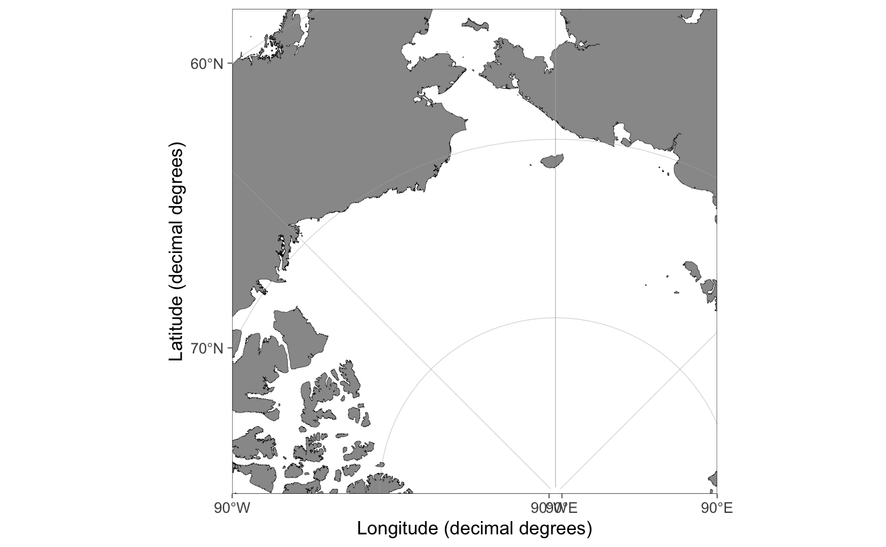
The projection.grid argument plots a grid using the
projected actual map coordinates instead of decimal degrees. The grid
helps in defining the limits using projected coordinates
giving better control over the map limits than decimal degree
coordinates. The automatic shapefile definition algorithm does not work
for projected coordinates. Therefore, if the limits are not given as
decimal degrees (any longitude outside the range [-180, 180] or latitude
[-90, 90]), the function asks to specify shapefiles. The
shapefiles can be defined by partially matching the names
of the pre-made shapefiles in shapefile_list (e.g. “Ar”
would be enough for “ArcticStereographic”):
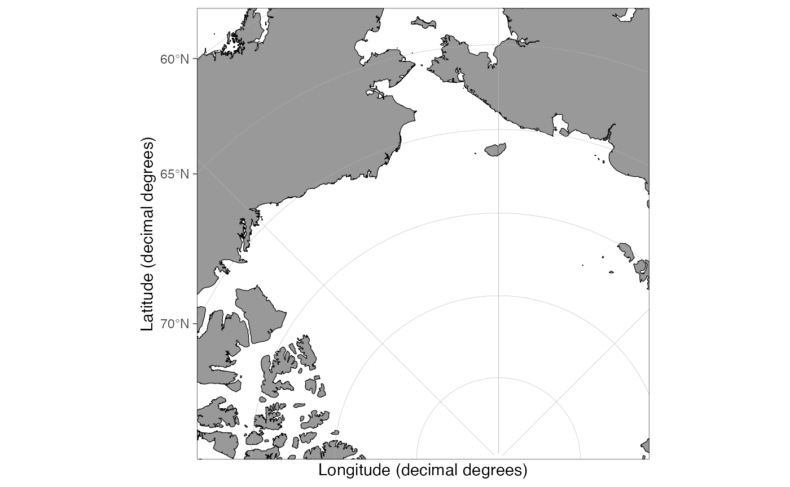
Data limits
The limits of a map can also be defined by inputting a data frame to
the data argument. The limits are automatically defined
allowing the user to quickly find limits for a desired spatial
dataset:
dt <- expand.grid(lon = c(160, -160), lat = c(60, 80))
basemap(data = dt) + # a synonym: basemap(dt)
geom_spatial_point(data = dt, aes(x = lon, y = lat), color = "red")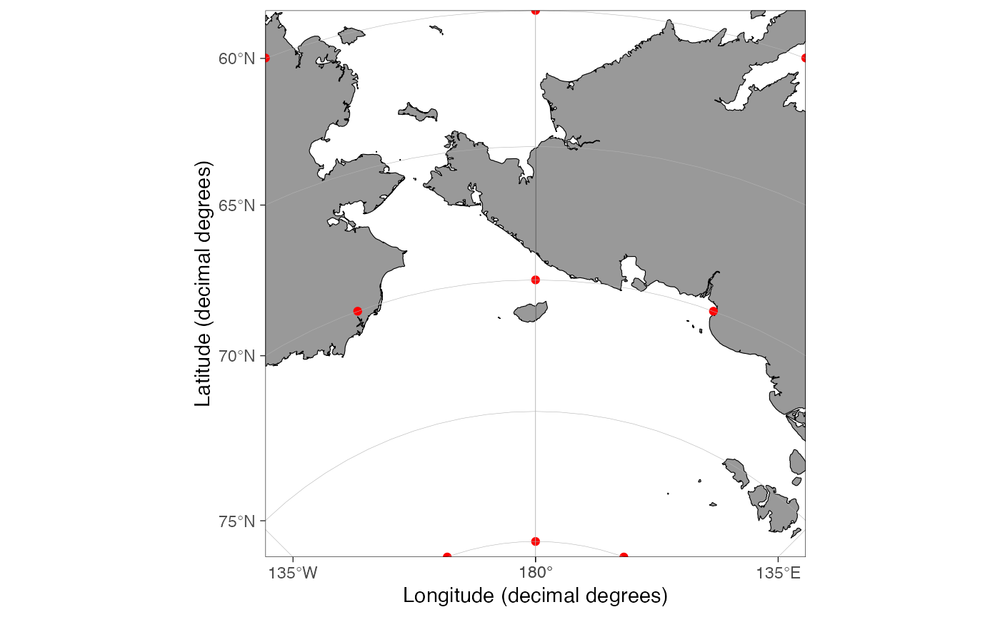
Note how the function expands the map to make all data fit inside the
map area compared to a similar plot using the limits
argument above. The function automatically detects columns containing
longitude and latitude information. The automatic detection algorithm is
not very advanced and it is recommended to use intuitive column names
for longitude (such as “lon”, “long”, or “longitude”) and latitude
(“lat”, “latitude”) columns. The coordinate data have to be given as
decimal degrees for the data argument to function.
Bathymetry and glaciers
It is advised to limit your map first and only then plot bathymetry
and glaciers to save the processing time of your computer (the
bathymetry shapes can be large). Bathymetry is plotted simply by
specifying bathymetry = TRUE:
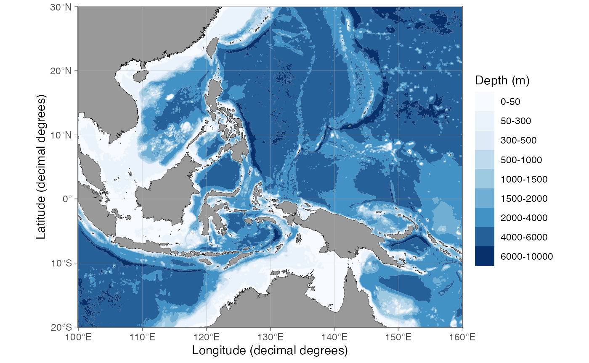
Glaciers can be plotted using the glaciers argument:
basemap(limits = 60, glaciers = TRUE, bathymetry = TRUE)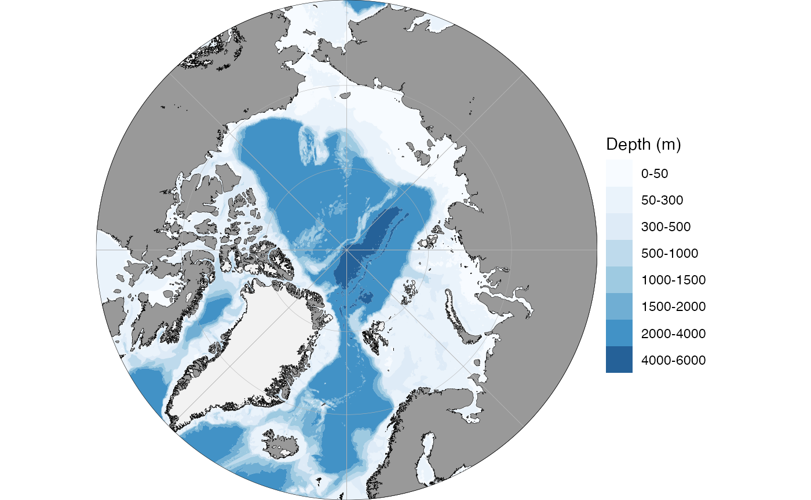
Adding data to maps
The basemap(...) function works almost similarly to the
ggplot(...) function as a base for adding further layers to
the plot. The difference between the basemap() and the
ggplot() is that the basemap() plot already
contains multiple ggplot layers. All layers except bathymetry have no
other aes mapping than x, y and
group. Bathymetry is mapped to fill or
color color in addition. This means that when you add
ggplot layers, you need to specify the data argument
explicitly as shown below. Another difference is that basemaps are
plotted using projected coordinates. The ggspatial and
ggplot’s geom_sf
functions convert the coordinates automatically to the projected
coordinates:
dt <- data.frame(lon = c(seq(-180, 0, 30), seq(30, 180, 30)), lat = -70)
basemap(limits = -60, glaciers = TRUE) + geom_spatial_point(data = dt, aes(x = lon, y = lat), color = "red")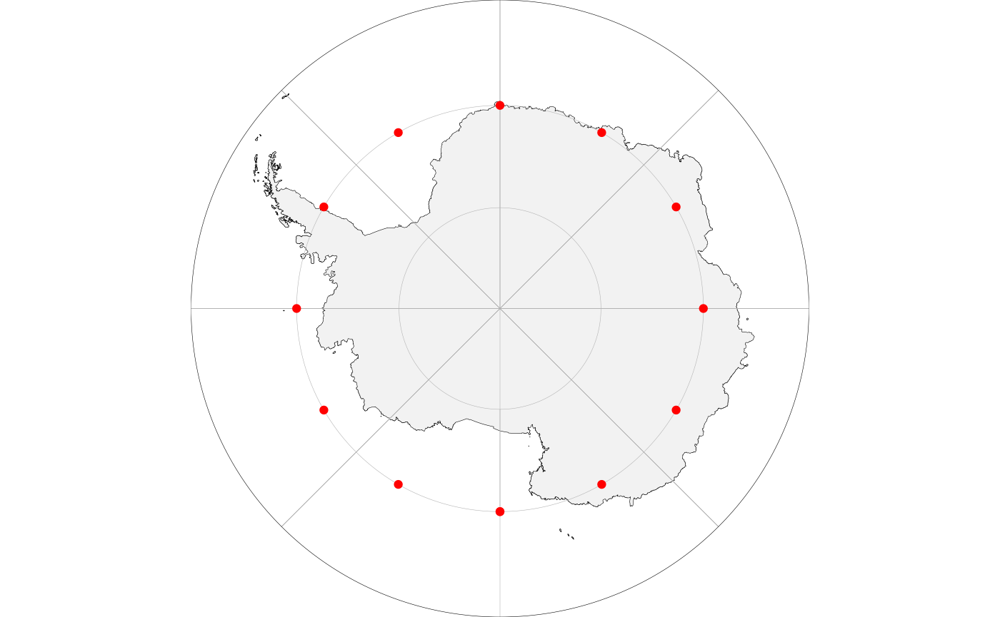
The ggplot functions can also be used, but the coordinates need to be
transformed to the basemap projection first using the
transform_coord function:
basemap(limits = -60, glaciers = TRUE) +
geom_point(data = transform_coord(dt), aes(x = lon, y = lat), color = "red")Note that the maps plotted in temperate and tropical regions are not projected. Consequently, decimal degrees work for such maps directly:
dt <- data.frame(lon = c(-100, -80, -60), lat = c(10, 25, 40), var = c("a", "a", "b"))
basemap(data = dt) + geom_point(data = dt, aes(x = lon, y = lat), color = "red")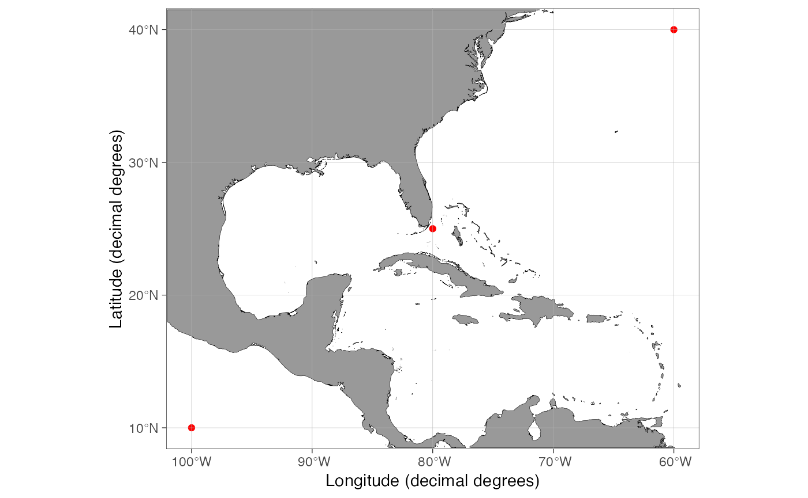
The transform_coord function detects the projection
automatically, given that the map is limited using a similar range of
coordinates. Therefore you can use the transform_coord as
demonstrated above whenever using standard ggplot layers.
transform_coord(data.frame(lon = -80, lat = 25), bind = TRUE)
#> lon lat lon.proj lat.proj
#> 1 -80 25 -80 25Rotating maps
The stereographic maps can be rotated to point towards north using
the rotate argument:
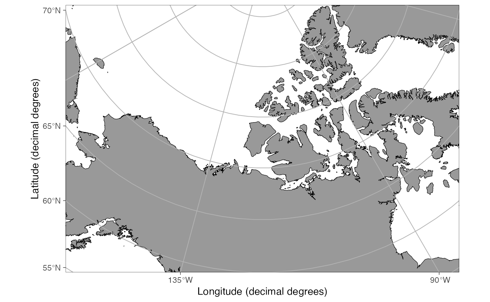
A word of warning, however: the rotation involves reprojecting all
shapefiles in their entirety and is memory consuming especially for
large bathymetry shapes. Make sure to limit your map correctly before
you add bathymetry. The rotation is still experimental and does not work
for limits defined using projected coordinates or
data. This functionality is likely to contain a whole lot
of bugs. Rotation does not currently work within the
transform_coord() function. Use the
ggspatial::geom_spatial_* functions when adding data to
rotated maps.
Quick map
The qmap function is designed as a shortcut to quickly
take a look at a spatial dataset similar to the ggplot’s qplot
function. This function is supposed to automatically detect the type of
data fed into the function and plot a map using appropriate geometries,
limits, and projection. You can use the expand.factor
argument to adjust the automatic zoom into data. Note that
too large expand.factor values will lead to errors.
dt <- data.frame(lon = c(-100, -80, -60), lat = c(10, 25, 40), var = c("a", "a", "b"))
qmap(dt, color = I("red")) # set color
qmap(dt, color = var, expand.factor = 1.3) # map color, zoom out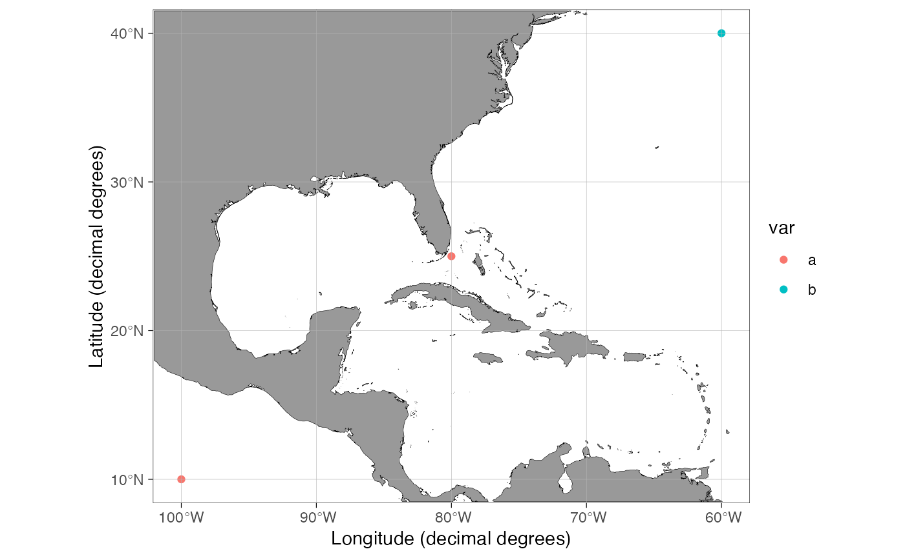
Detailed maps
Detailed shapefiles are stored in the ggOceanMapsLargeData
repository and downloaded as needed. Available shapefiles can be viewed
using the shapefile_list() function.
shapefile_list("all")
#> name land
#> 1 ArcticStereographic ggOceanMapsData::arctic_land
#> 2 AntarcticStereographic ggOceanMapsData::antarctic_land
#> 3 DecimalDegree ggOceanMapsData::dd_land
#> 4 Svalbard svalbard_land
#> 5 BarentsSea barentssea_land
#> 6 IBCAO ggOceanMapsData::arctic_land
#> glacier bathy crs
#> 1 ggOceanMapsData::arctic_glacier ggOceanMapsData::arctic_bathy 3995
#> 2 ggOceanMapsData::antarctic_glacier ggOceanMapsData::antarctic_bathy 3031
#> 3 ggOceanMapsData::dd_glacier ggOceanMapsData::dd_bathy 4326
#> 4 svalbard_glacier svalbard_bathy 32633
#> 5 barentssea_glacier barentssea_bathy 32636
#> 6 ggOceanMapsData::arctic_glacier ibcao_bathy 3995
#> path
#> 1 <NA>
#> 2 <NA>
#> 3 <NA>
#> 4 https://github.com/MikkoVihtakari/ggOceanMapsLargeData/raw/master/data/svalbard.rda
#> 5 https://github.com/MikkoVihtakari/ggOceanMapsLargeData/raw/master/data/barentssea.rda
#> 6 https://github.com/MikkoVihtakari/ggOceanMapsLargeData/raw/master/data/ibcao_bathy.rdaPlotting shapefiles from the list is done as for any other shapes. Note that the projection of the shapefiles varies.
basemap(shapefiles = "BarentsSea", bathymetry = TRUE)
The Svalbard map from the PlotSvalbard package:
basemap(shapefiles = "Svalbard", glaciers = TRUE)
The PlotSvalbard maps can also be generated using ggOceanMaps with the ggOceanMapsLargeData extension. The function asks to download the data when you use it for the first time.
Kongsfjorden from the PlotSvalbard package:
basemap(limits = c(10.9, 12.65, 78.83, 79.12),
bathymetry = TRUE, shapefiles = "Svalbard",
legends = FALSE, glaciers = TRUE)
Advanced use
This section focuses on flexibility and user modifications. It is assumed that advanced users understand the basics of geographic information systems (GIS) and how to use these systems in R (e.g. see the Making Maps with R chapter in Lovelace et al. 2020).
Projections
The basemap function uses the limits
argument to automatically detect the required projection for a map (or
the data argument to calculate limits). The
algorithms deciding which projection to use are defined in
define_shapefiles and shapefile_list
functions. These conditions are expected to change during the
development of the package and documented information here or in the
basemap function might be outdated. Make sure to check the
projection definition functions for up-to-date information. At the time
of writing, the function uses three different projections (given as EPSG codes):
-
3995 WGS 84 / Arctic Polar Stereographic. Called
“ArcticStereographic”. For max latitude (
limits[4]) >= 60 (if min latitude (limits[3]) >= 30), and single integer latitudes >= 30 and <= 89. -
3031 WGS 84 / Antarctic Polar Stereographic. Called
“AntarcticStereographic”. For max latitude (
limits[4]) <= -60 (if min latitude (limits[3]) <= -30), and single integer latitudes <= -30 and >= -89. -
4326 WGS 84 / World Geodetic System 1984, used in
GPS. Called “DecimalDegree”. For min latitude (
limits[3]) < 30 or > -30, max latitude (limits[4]) < 60 or > -60, and single integer latitudes < 30 and > -30.
The basemap function uses pre-transformed shapefiles for
each of the projections above (defined in shapefile_list).
This is to make the plotting quicker and more memory efficient but leads
to larger data size required by the package.
Appearance
Bathymetry styles
The basemap function contains four pre-made bathymetry
styles defined using the bathy.style argument. Two of these
alternatives ("poly_*") have been mapped to
fill using the geom_polygon function, while
the two others (contour_*) have been mapped to
color. The default style ("poly_blues") has
been displayed throughout this user manual. The other styles are:
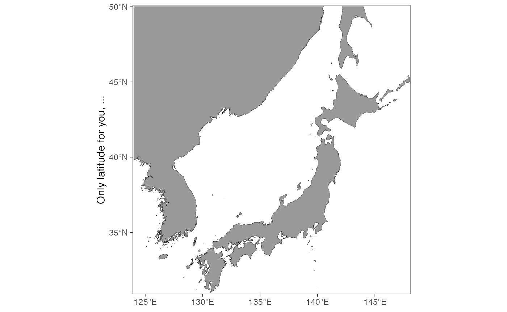
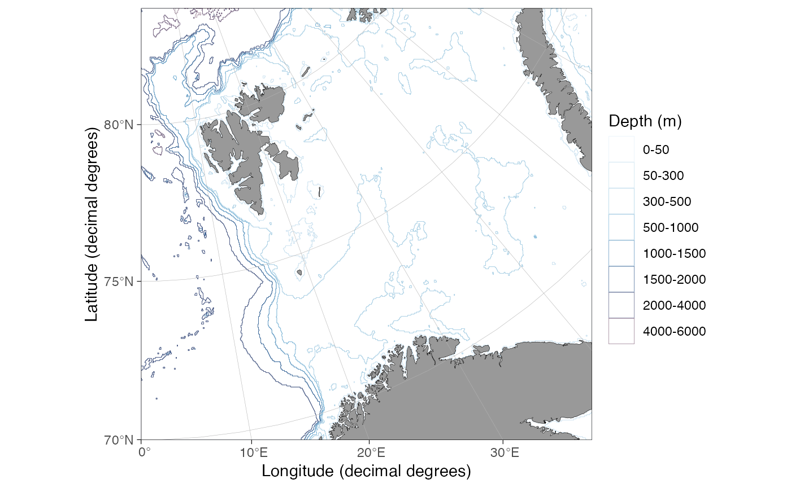
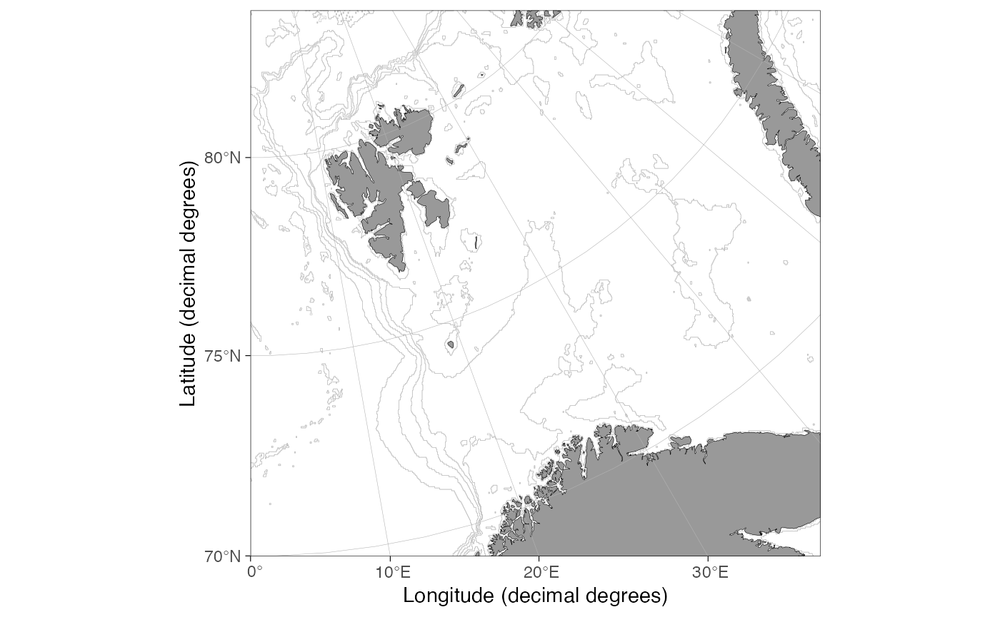
Customizing bathymetry styles
The bathy.style = "poly_*" bathymetry polygons are
mapped to geom_fill_discrete and can be modifying using
standard ggplot syntax:
basemap(limits = c(-140, -105, 20, 40), bathymetry = TRUE) +
scale_fill_viridis_d("Water depth (m)")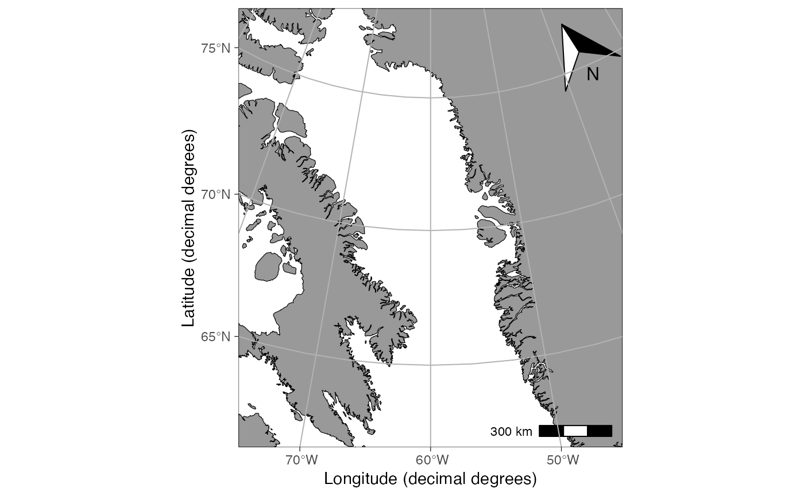
The bathy.style = "contour_*" bathymetry lines are
mapped to geom_color_discrete and can be modifying using
standard ggplot syntax:
basemap(limits = c(0, 60, 68, 80), bathymetry = TRUE, bathy.style = "contour_blues") +
scale_color_hue()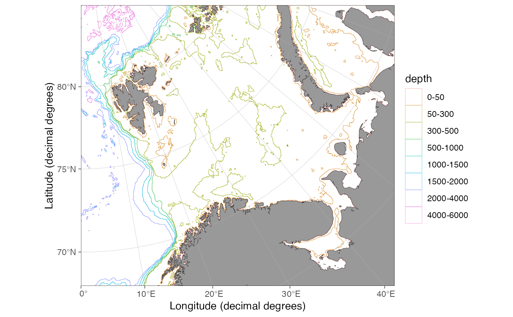
Graphical parameters
The basemap function uses graphical parameters that
(very objectively) happen to please the eye of the author and have
worked in the applications needed by the author. The default parameters
may suddenly change without warning. You may want to modify the
appearances of a basemap to your own liking. This can be
done using the *.col (fill), *.border.col
(line color) and *.size (line width) arguments:
basemap(limits = c(-20, 30, 55, 70), glaciers = TRUE,
bathymetry = TRUE, bathy.style = "poly_greys",
land.col = "#eeeac4", gla.col = "cadetblue",
land.border.col = NA, gla.border.col = NA,
grid.size = 0.05)Graticules (the grid lines) can be removed by setting the
grid.col to NA. Axis labels can be manipulated
using standard ggplot code:
Add scale bar and north arrow
Scale bar and north arrows can be added using the ggspatial functions (the package is automatically loaded when you use ggOceanMaps):
basemap(limits = c(-75, -45, 62, 78), rotate = TRUE) +
annotation_scale(location = "br") +
annotation_north_arrow(location = "tr", which_north = "true") Note that the north arrow in the example above points towards North where it is placed and that the direction of North varies as shown by the meridians. The scale bar is correct at 71 \(\circ\)N latitude as specified by the projection (crs = 3995) for Arctic stereographic maps.
Modifying basemap objects
The objects produced by the basemap function are
standard ggplot objects with the difference that relevant information
used in mapping is added to attributes of the object:
p <- basemap(-60)
names(attributes(p))
#> [1] "names" "class" "bathymetry" "glaciers" "limits"
#> [6] "polarmap" "map.grid" "crs" "proj"Accessing the attributes allow custom modifications of
maps produced by the basemap function. See the Reordering layers section as an
example.
Reordering layers
Sometimes there is a need to move land, glacier, and grid layers on
top of spatial data added on a basemap. This can be done
using the reorder_layers function. This example uses
Norwegian fishing regions (Hovedområder f.o.m. 2018), which can be
downloaded from the Norwegian
Directorate of Fisheries data portal (use “ESRI shapefile” option).
The example works for any spatial polygons with crs information,
however.
The Norwegian fishing regions are included as an example dataset in
the ggOceanMaps package. You can download these data
and use the rgdal::readOGR function to read the shapefile
if you wish to follow the example fully.
data(fishingAreasNor, package = "ggOceanMapsData")
basemap(fishingAreasNor) +
annotation_spatial(fishingAreasNor, fill = NA) +
coord_sf(expand = FALSE) # required to keep the limits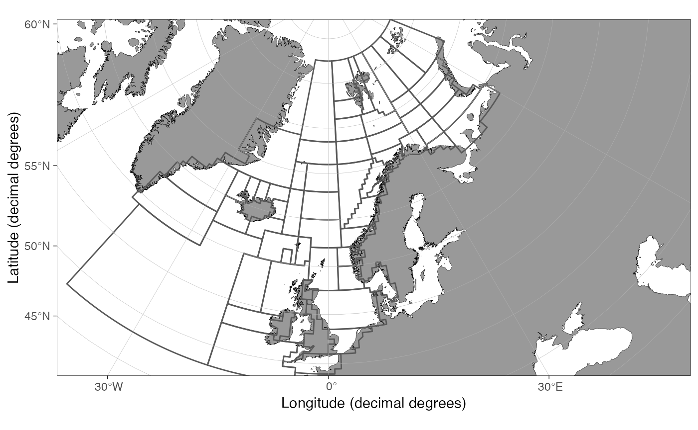
The initial plot draws the polygons. Note how we had to add
coord_sf(expand = FALSE) because layer_spatial
and annotation_spatial functions from the ggspatial package
seem to modify coord_sf when added to the plot. The
basemap function uses expand = FALSE (run the
script without the addition and see the difference). Note also how the
polygon boundaries are partly on land. We want to eventually hide them
under land. We also add region labels and color the polygons based on
their area to demonstrate the capabilities of ggplot, ggspatial and
ggOceanMaps:
labels <- suppressWarnings(sf::st_centroid(fishingAreasNor))
fishingAreasNor$area <- as.numeric(sf::st_area(fishingAreasNor))/1e9 # calculate area in 1000 km2
p <- basemap(fishingAreasNor) +
geom_sf(data = fishingAreasNor, aes(fill = area)) +
geom_sf_text(data = labels, aes(label = FID), size = FS(8), fontface = 2) +
scale_fill_distiller(name = "Area\n(1000 km2)",
palette = "Spectral", na.value = "white",
limits = c(0, 500), oob = scales::squish)
reorder_layers(p)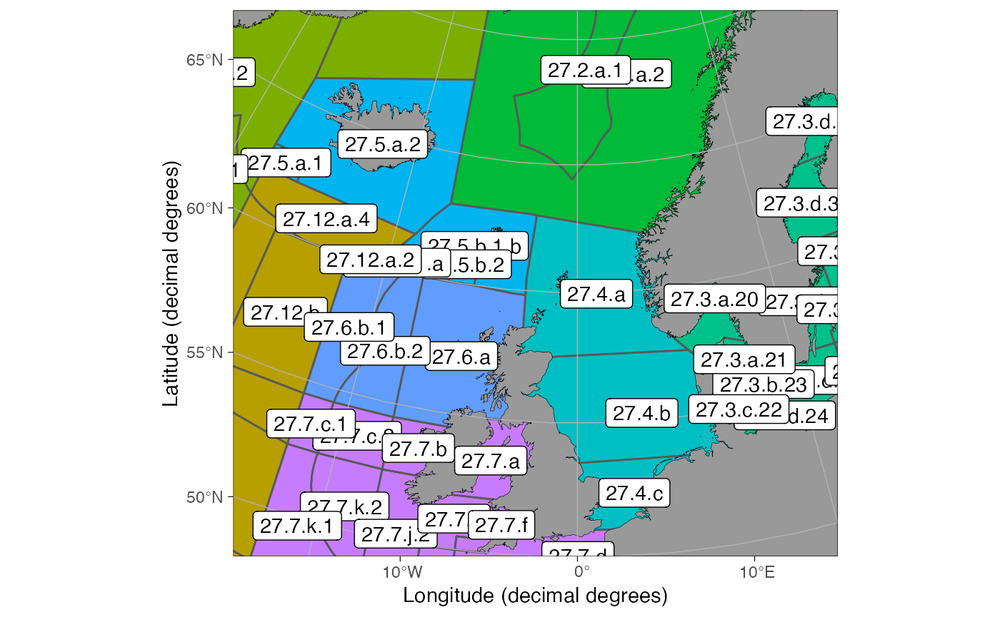
Ideally, the region labels should not go under land. This can be fixed by plotting the labels on top of the reordered ggplot object. To demonstrate how to reorder layers, we do this manually here:
p <- reorder_layers(p)
tmp <- sapply(p$layers, function(k) !is.null(k$mapping$label)) # the layer with label mapping
p$layers <- c(p$layers[-which(tmp)], p$layers[which(tmp)])
p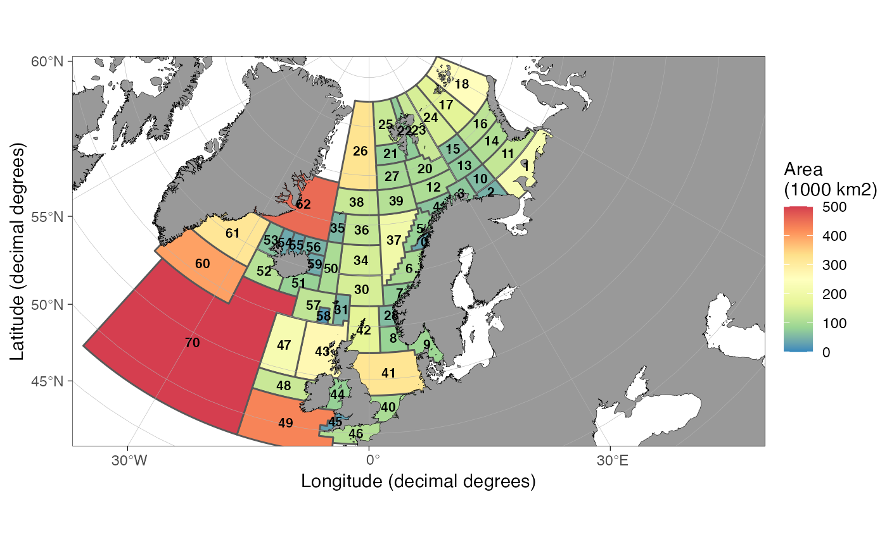
Contolling the plotting order of graticules
Graticules are plotted using ggplot2::coord_sf()
and are regarded as the panel element in the ggplot2::theme().
Note that also background color is included in the panel
element (see the next section). The ggOceanMaps::theme_map()
function, which is automatically executed together with every
basemap() and qmap() command, controls the
position of the graticules and they are set on top by default:
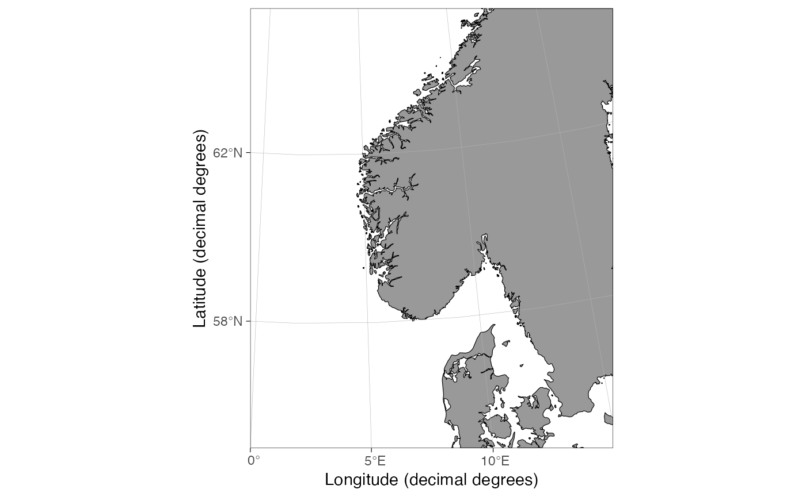
To move the graticules under all layers, use the
panel.ontop argument in ggplot2::theme():
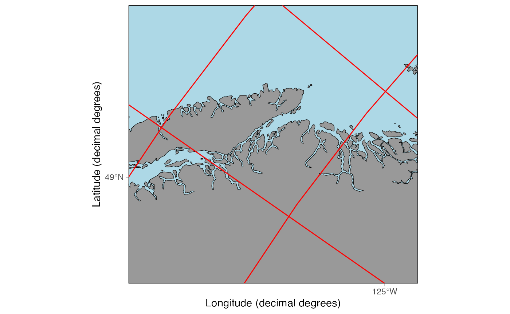
Sometimes there is a need to control the position of graticules in
between layers. At the time of writing, ggplot does not offer a
straightforward way to do this, but we can use the code from ggplot2::coord_sf()
to make the graticules:
data(ices_areas, package = "ggOceanMapsData")
p <- basemap(limits = c(-20, 15, 50, 70), grid.col = NA) + # without graticules
geom_sf(data = ices_areas, aes(fill = SubArea), show.legend = FALSE)
# Make the graticules:
lims <- attributes(p)$limits
graticule <- sf::st_graticule(
c(lims[1], lims[3], lims[2], lims[4]),
crs = attributes(p)$proj,
lon = seq(-180, 180, 15), lat = seq(-90, 90, 5))
# Plot
reorder_layers(p) +
geom_sf(data = graticule, color = "grey70", size = LS(0.5)) + # graticules
coord_sf(xlim = lims[1:2], ylim = lims[3:4], # redefine limits
crs = attributes(p)$proj) +
# labels on top of graticules
geom_sf_label(
data = suppressWarnings(sf::st_centroid(sf::st_make_valid(ices_areas))),
aes(label = Area_Full)
)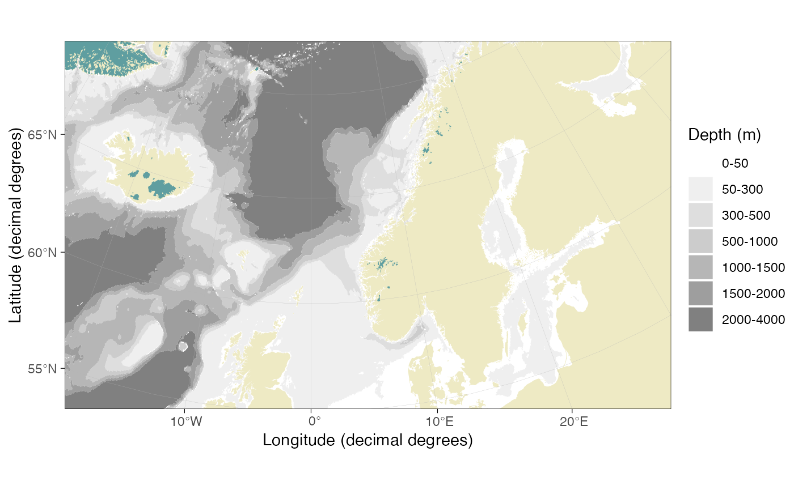
An exception are the polar maps for which graticules are drawn by ggOceanMaps (because ggplot2 graticules for those maps were bugged some years ago when writing the function; this part requires a revision at some point).
X <- basemap_data(60)
basemap(60, grid.col = NA) +
ggspatial::geom_spatial_path(
data = X$map.grid$lon.grid.lines,
aes(x = lon, y = lat),
crs = 4326, color = "red", size = 1) +
ggspatial::geom_spatial_path(
data = X$map.grid$lat.grid.lines,
aes(x = lon, y = lat),
crs = 4326,
color = "red", size = 1) +
ggspatial::layer_spatial(
data = X$shapefiles$land,
fill = "grey60", color = "black", size = 0.1)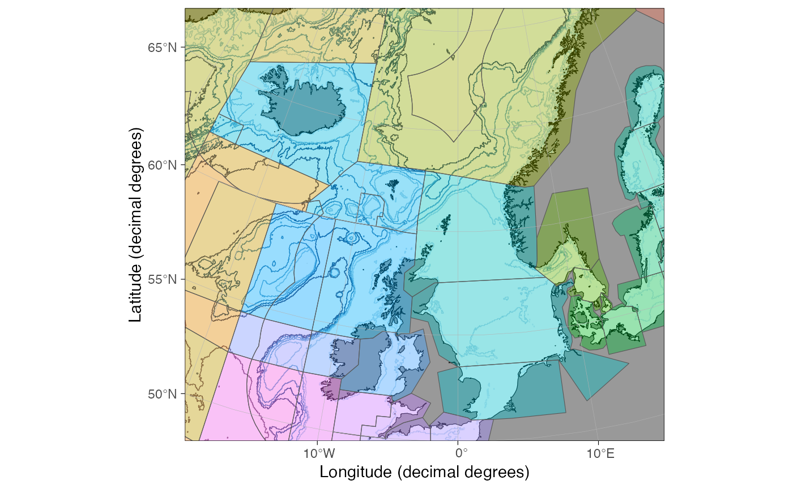
Coloring the ocean (background)
Similarly, the ggplot2::theme()
panel element allows coloring
the ocean:
basemap(expand.grid(lon = c(-129, -124), lat = c(49, 53)), grid.col = "red", grid.size = 0.5) +
theme(panel.background = element_rect(fill = "lightblue"),
panel.ontop = FALSE) 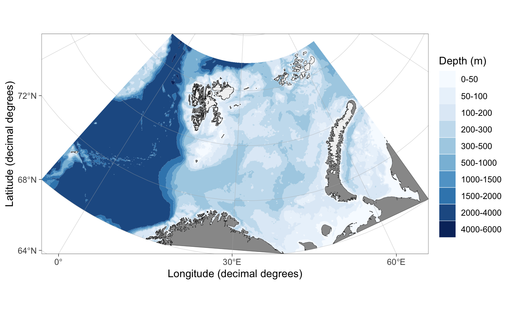
If you want the graticules on top, you’ll need to define them manually because, both, the background and the grid, are contained in the same ggplot element called panel:
p <- basemap(expand.grid(lon = c(-129, -124), lat = c(49, 53)), grid.col = NA) +
theme(panel.background = element_rect(fill = "lightblue"),
panel.ontop = FALSE)
# Make the graticules:
lims <- attributes(p)$limits
graticule <- sf::st_graticule(
c(lims[1], lims[3], lims[2], lims[4]),
crs = attributes(p)$proj,
lon = attributes(p)$map.grid$lon.breaks,
lat = attributes(p)$map.grid$lat.breaks
)
# Plot
p +
geom_sf(data = graticule, color = "red", size = LS(1)) + # graticules
coord_sf(xlim = lims[1:2], ylim = lims[3:4], # redefine limits
crs = attributes(p)$proj) 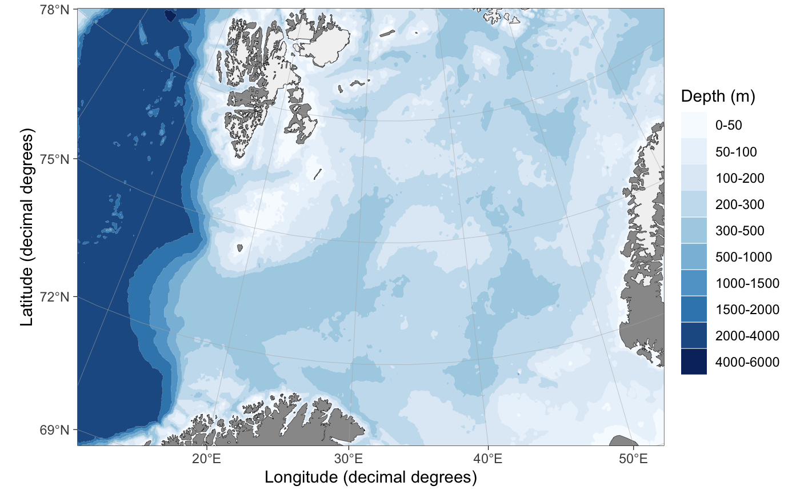
Add a fill scale on top of bathymetry
basemap(c(-20, 15, 50, 70), bathymetry = TRUE) +
annotation_spatial(ices_areas, aes(fill = Area_Full))
#> Error in `f()`:
# ! Insufficient values in manual scale. 75 needed but only 9 provided.
# Run `rlang::last_error()` to see where the error occurred.This error comes because ggplot does not allow two color scales with similar mapping in one plot. The issue can be evaded by using contour bathymetry:
basemap(c(-20, 15, 50, 70), bathymetry = TRUE,
bathy.style = "contour_blues", legends = FALSE) +
annotation_spatial(ices_areas, aes(fill = Area_Full), alpha = 0.4) +
theme(legend.position = "none")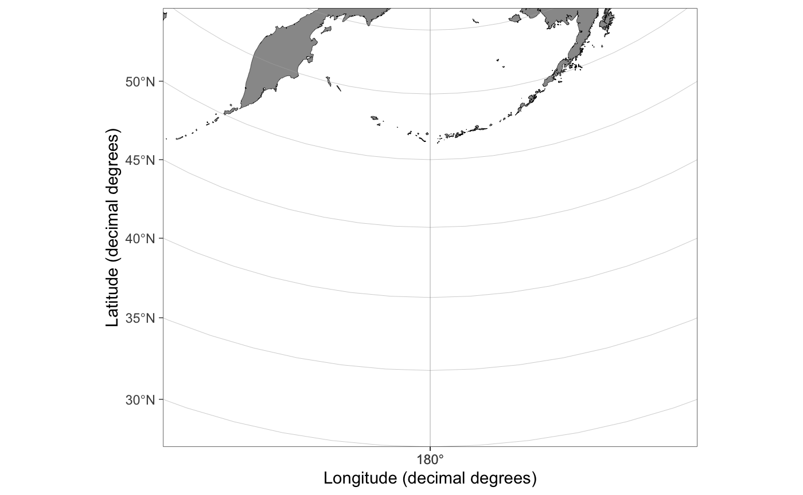
Or by using the ggnewscale package to
make the data fill mapping disconnected from that in
basemap:
basemap(limits = c(-20, 15, 50, 70), bathymetry = TRUE,
bathy.style = "poly_greys") +
ggnewscale::new_scale_fill() +
annotation_spatial(ices_areas, aes(fill = Area_Full), alpha = 0.4) +
theme(legend.position = "none")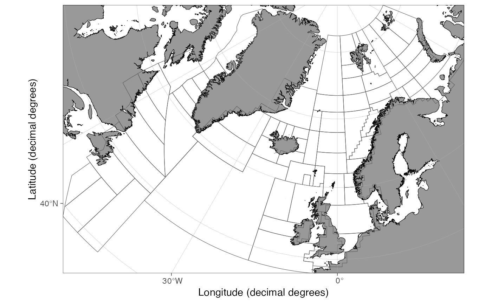
Custom shapefiles
The ggOceanMaps package uses vector (spatial polygon)
data to make the plotting more efficient and to produce sharp
images at any resolution. For the time being, the package supports three
kinds of shapefiles: 1) land shapes, 2) glacier shapes, and 3)
bathymetry shapes. Each of these shapes has to be defined using the same
projection. Since the shapefiles are large and generating them may
require long processing time, it is most convenient to save them in a
Rdata file as sp::SpatialPolygonsDataFrames objects and
load them to the memory when used to make a map. Useful sources for
spatial data are:
Vector data
- Natural Earth Data provides polygon data in relatively high detail for the entire Earth. Used as data-source for land and glacier shapes throughout the package, except for the most detailed maps.
- Norwegian Mapping Authority provides high-resolution spatial data for mainland Norway and Svalbard.
- Norwegian Polar Institute provides high-resolution vector data for Norwegian polar regions.
Raster data for bathymetry
- GEBCO Compilation Group (2019) GEBCO 2019 15-arcsecond grid. The highest resolution open bathymetry grid available at the moment. Referred to as “GEBCO data”.
-
ETOPO1
1 Arc-Minute Global Relief Model. Can also be accessed using the
marmap::getNOAA.bathy(see Section 1). Referred to as “NOAA data” and “ETOPO1 data”.
There are probably more sources which the author has not needed yet. Please send an email to add more options to the list. The bathymetry datasets are large and require vectorization before they can be plotted in ggplot2 within a reasonable time.
Here we go through how to plot customized shapefiles for the Barents Sea as an example. A similar procedure can be applied to any region in the world.
Bathymetries
The Natural Earth Data provides bathymetry vector data, which can be readily used in ggOceanMaps. The contours in that dataset are, however, not very practical for marine biology and fisheries in shallow seas such as the Barents Sea. Download the ETOPO1 dataset as grid registered NetCDF gmt4 to a folder in your computer. It may be beneficial to make a “GIS” or “Shapefiles” folder where you store similar datasets for later use. Whether you use ice or bed-rock surface does not matter for this example as there are no glaciers under the sea-level within the region of interest. In any case, this choice has no visual effect because land and glaciers will be plotted on top of the bathymetry, but the ice surface option will lead to smaller file size.
The bathymetry needs first to be reclassified and formatted for the
consequent vectorization step. First, we need to define the location of
the ETOPO1 dataset and to find limits for our region in decimal degrees.
The limits can be found using the basemap function. It is
advised to use slightly wider limits than the region of interest.
etopoPath <- "" # Replace by the path to the folder where the ETOPO1 grd file is located.
lims <- c(-8, 65, 68, 82)
projection <- "EPSG:32636"
basemap(limits = lims)We also need to define an appropriate projection. We will use the UTM 36N zone projection, which is
approximately in the middle of our area of interest. We define higher
resolution contour in depths 0-500 m because our area of interest is
relatively shallow. The raster_bathymetry function is
relatively slow for large data. The aggregation.factor
argument can be used to reduce file size but will influence the
resolution of the resulting shapefile (higher factors lead to a lower
resolution).
rb <- raster_bathymetry(bathy = paste(etopoPath, "ETOPO1_Ice_g_gmt4.grd", sep = "/"),
depths = c(50, 100, 200, 300, 500, 1000, 1500, 2000, 4000, 6000, 10000),
proj.out = projection,
boundary = lims
)Now we have the bathyRaster object which can be vectorized:
The vectorization is done using the vector_bathymetry
function. The drop.crumbs and remove.holes
parameters can be used to reduce the file size, while the
smooth parameter makes the contours look smoother under
high zoom levels. Note that the smoothing of raster cell edges is
completely arbitrary and may lead to map contours that do not exist in
reality.
bs_bathy <- vector_bathymetry(rb)
sp::plot(bs_bathy)Land shapes
Land shapes could theoretically be defined from the bathymetry raster (depth = 0). Nevertheless, since the 10m Natural Earth Data vectors are of high resolution, there has been no need to write a function to do this. We use Natural Earth Data instead. Download the Natural Earth Data Land and Minor Islands vectors to your “GIS” or “Shapefiles” folder and define folder paths under:
NEDPath <- "" # Natural Earth Data location
outPath <- "" # Data output locationOnce done, we go ahead and process the shapefiles:
world <- rgdal::readOGR(paste(NEDPath, "ne_10m_land/ne_10m_land.shp", sep = "/"))
islands <- rgdal::readOGR(paste(NEDPath, "ne_10m_minor_islands/ne_10m_minor_islands.shp", sep = "/"))
world <- rbind(world, islands)
bs_land <- clip_shapefile(world, lims)
bs_land <- sp::spTransform(bs_land, CRSobj = sp::CRS(projection))
rgeos::gIsValid(bs_land) # Has to return TRUE, if not use rgeos::gBuffer
bs_land <- rgeos::gBuffer(bs_land, byid = TRUE, width = 0)
sp::plot(bs_land)Glacier shapes
Download the Natural Earth Data Glaciated
Areas vectors to your NEDPath.
glaciers <- rgdal::readOGR(paste(NEDPath, "ne_10m_glaciated_areas/ne_10m_glaciated_areas.shp", sep = "/"))
rgeos::gIsValid(glaciers) # Needs buffering
glaciers <- rgeos::gBuffer(glaciers, byid = TRUE, width = 0)
bs_glacier <- clip_shapefile(glaciers, lims)
bs_glacier <- sp::spTransform(bs_glacier, CRSobj = sp::CRS(projection))
rgeos::gIsValid(bs_glacier)
sp::plot(bs_glacier)Plotting the shapefiles using basemap
Now that we have the shapefiles, we can save them to a file so that we do not run the script above every time we plot a map using custom shapefiles.
save(bs_bathy, bs_land, bs_glacier, file = paste(outPath, "bs_shapes.rda", sep = "/"), compress = "xz")The shapefiles can now be plotted using the basemap
function:
basemap(shapefiles = list(land = bs_land, glacier = bs_glacier, bathy = bs_bathy), bathymetry = TRUE, glaciers = TRUE)The list elements land, glacier and
bathy are required, but glacier and
bathy can be set to NULL if
bathymetry and glaciers are set to
FALSE, respectively. This means that you are not forced to
define bathymetries and glaciers for your custom shapefile maps if
plotting them is not desired. Note how the map becomes plotted outside
its actual limits. This issue will hopefully be fixed in the future. The
map can be limited using the limits or data
arguments as any basemap:
basemap(limits = c(10, 53, 70, 80), shapefiles = list(land = bs_land, glacier = bs_glacier, bathy = bs_bathy), bathymetry = TRUE, glaciers = TRUE)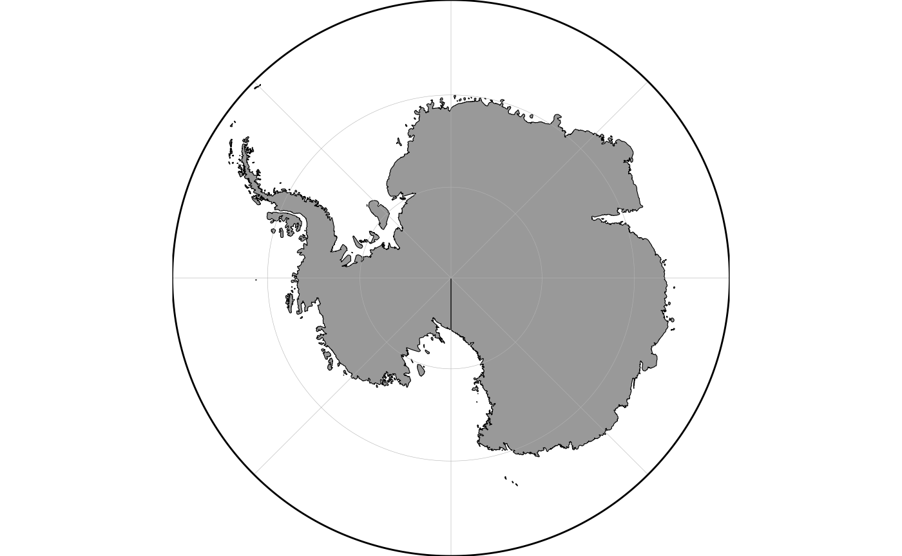
Known issues
Antimeridian (date-line) issues
As any decimal degree projection, the ggOceanMaps suffers from the
antimeridian issue for regions < 30 and > -30 latitude. Currently,
the basemap function plots the entire world instead of the
desired region:
While this problem has yet to be solved, the projected maps \(\geq\) 30 and \(\leq\) -30 can tackle with antimeridians:
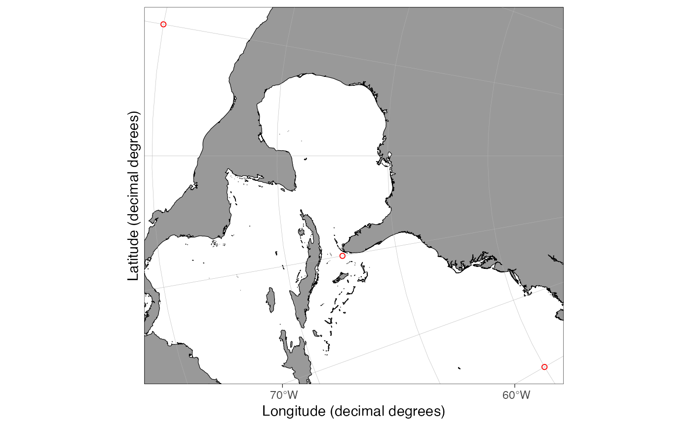
Note also that limiting the polar stereographic maps using decimal
degree longitude limits[1:2] using equal longitudes in
decimal degree space (e.g. c(90, 90),
c(-180, 180), …) is equal to limiting a map using latitude
argument furthest from the pole. This is because all limit points end up
along a single line in angular space. The function automatically
corrects for this definition error:

Citations and data sources
The data used by the package are not the property of the Institute of Marine Research nor the author of the package. It is, therefore, important that you cite the data sources used in a map you generate with the package. Please see here for a list of data sources.
Please cite the package whenever maps generated by the package are published. For up-to-date citation information, please use:
citation("ggOceanMaps")
#>
#> To cite package 'ggOceanMaps' in publications use:
#>
#> Vihtakari M (2022). _ggOceanMaps: Plot Data on Oceanographic Maps
#> using 'ggplot2'_. R package version 1.3.0,
#> <https://mikkovihtakari.github.io/ggOceanMaps/>.
#>
#> A BibTeX entry for LaTeX users is
#>
#> @Manual{,
#> title = {ggOceanMaps: Plot Data on Oceanographic Maps using 'ggplot2'},
#> author = {Mikko Vihtakari},
#> year = {2022},
#> note = {R package version 1.3.0},
#> url = {https://mikkovihtakari.github.io/ggOceanMaps/},
#> }